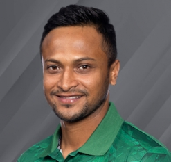

Sakib-Al-Hassan
24 March, 1987
24 March, 1987
Early years and youth cricket
Born in Magura, Khulna, Shakib started playing cricket at an early age. According to Prothom Alo sports editor Utpal Shuvro, Shakib "was fairly proficient at cricket and was often hired to play for different villages and teams".[22][23] In one of those matches Shakib batted aggressively and bowled fast, as he usually did, but also chose to experiment with spin bowling which proved to be not so effective. He was picked to play for Islampur and took a wicket with his first ball; it was his first delivery with a proper cricket ball, having previously played with a taped tennis ball.[22][23] He spent six months training at Bangladesh Krira Shikkha Protishtan,[22][23] a government-run sports institute.[24] Shakib played his debut Under-17 match against UAE Under-17s in 2003 in the ACC Under-17 Cup where he got a bowling figure of 3–18 in 8 overs (with 2 maiden overs).[4] In May 2004, at the age of 17, Shakib made his first-class debut for Khulna where he got a bowling figure of 0/116 of 30 overs in the 1st innings and 3/92 of 28 overs in the 2nd innings. He also scored 13 of 11 with three 4s in the 1st innings and 16 of 43 in the 2nd innings. His 1st first-class wicket was Rakibul Hasan.[5]
National record